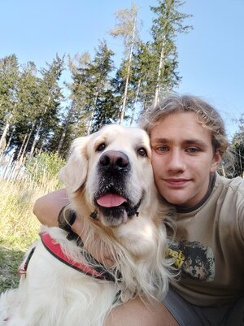

Name: Leonard-Adrian Bunea
Geburtsdatum: 20. Juli 2005
Wohnort: Maria Laach am Jauerling, Krems
Staatsbürgerschaft: Rumänien
Muttersprache: Rumänisch
Größe: 1,68m
Haare: Bräunlich, lang
Kleidung: Schwarzer Hoodie, meistens Jeans oder Cargo-Jeans
Hobbies: Laufen, Programieren, Gaming
Haustier: Hund "Subi"
